A scrapped classic
I acquired a non-functional Royal Enfield Bullet 350. The challenge was to make this heavy legacy chassis an efficient electric motorcycle without losing the classic stance and the feel of riding a geared bike.
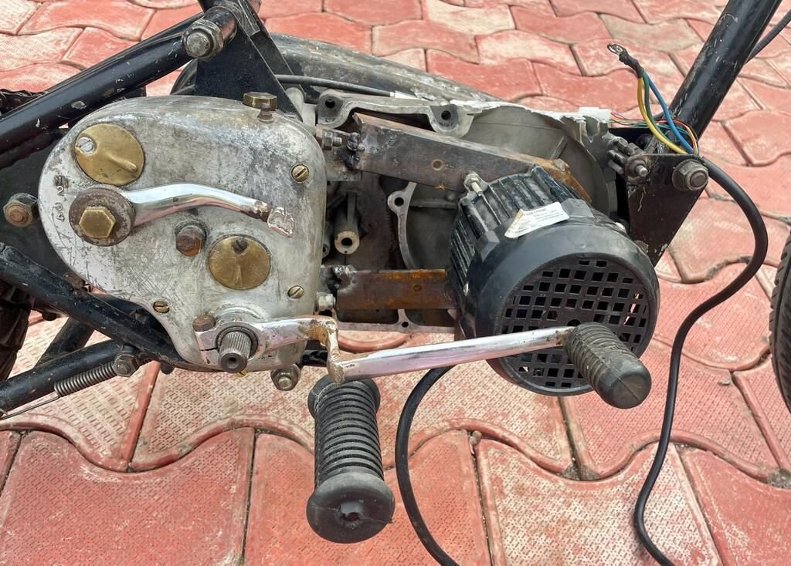
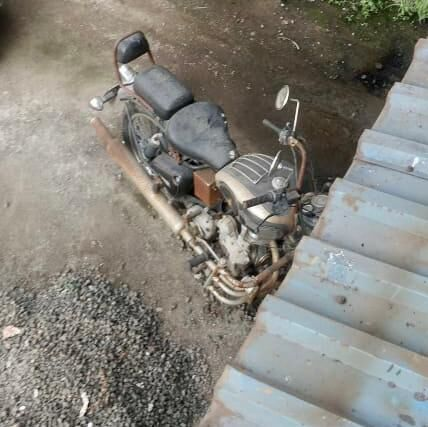
The architecture
Instead of a hub motor, the motor drives through the bike's own drivetrain: motor, crankshaft, clutch, gearbox, chain, wheel. Keeping the gears multiplies torque and keeps the clutch and gear lever the rider already knows. The battery and controller sit in the empty engine bay for balanced weight.
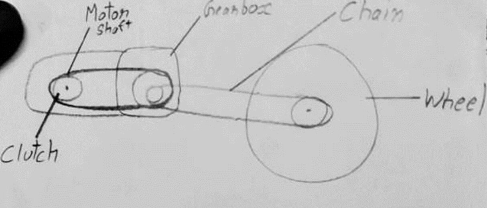
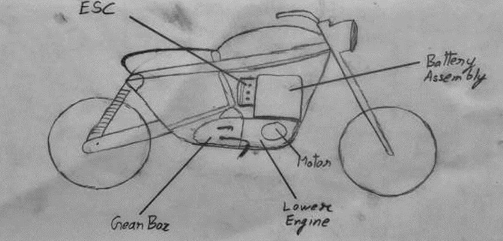
Build
I custom-fabricated the motor mounts, mated a 48 V BLDC motor to the original ICE gearbox, and wired the controller and electronics by hand, testing and adjusting as I went.
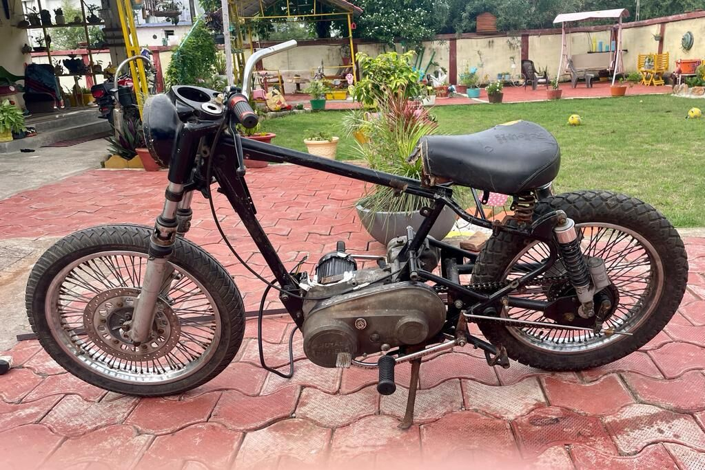
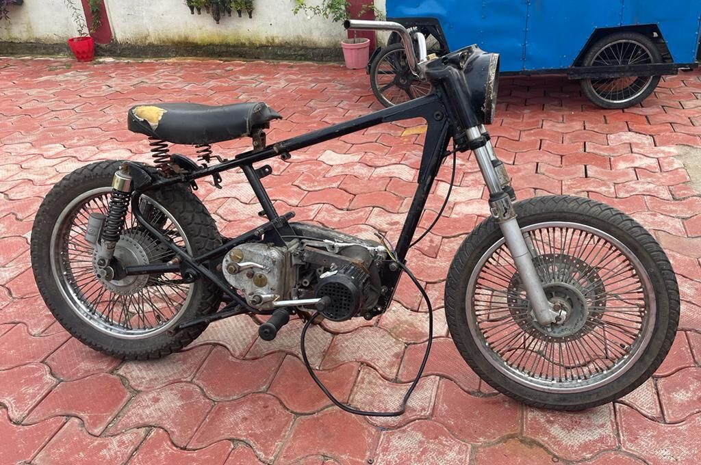
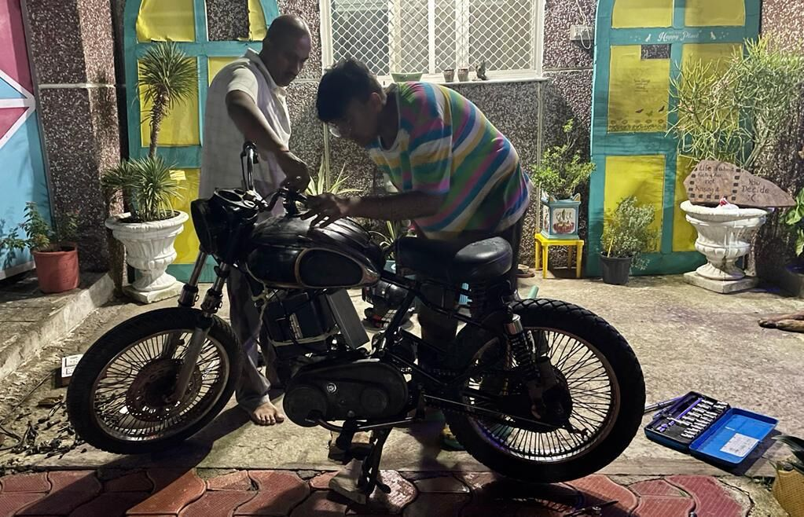
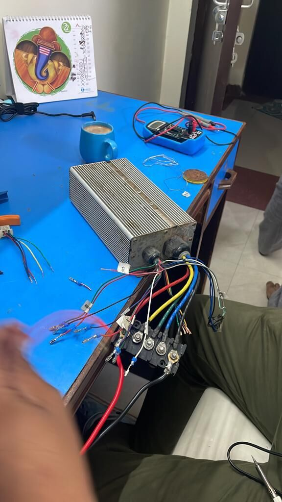
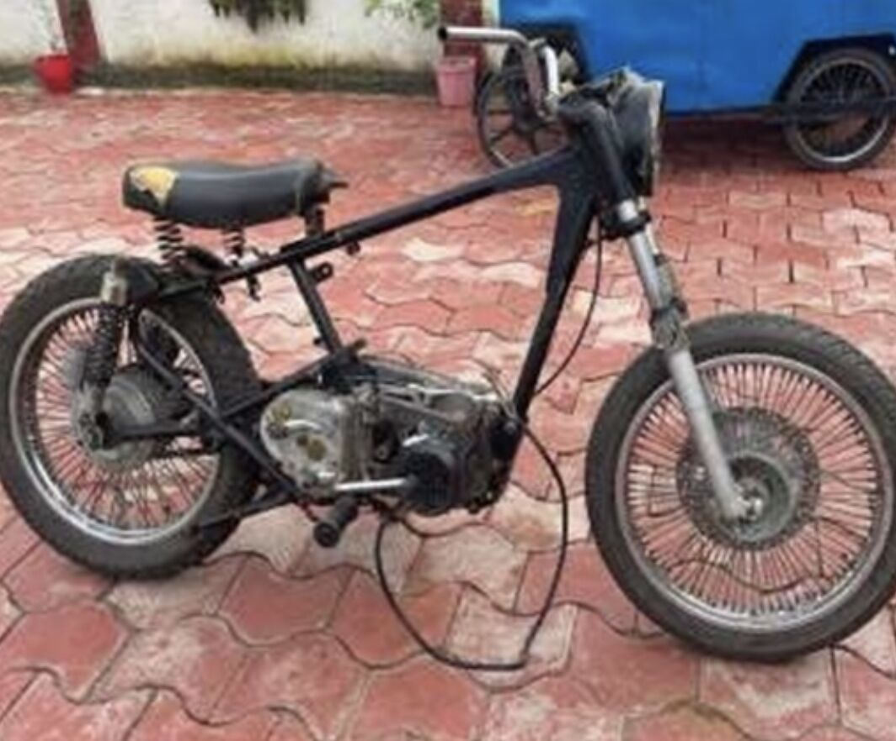
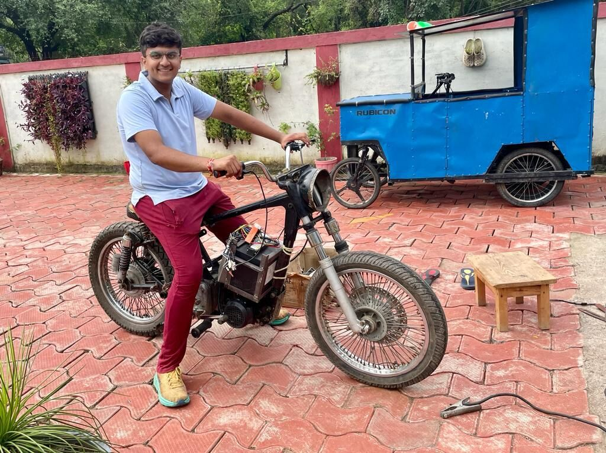
The result
A fully working geared electric motorcycle with zero engine vibration, instant torque and no oil changes, with modern lighting and precise control. The drivetrain integration is now patent-applied and is the basis of the EV work at Vahanik Customs.
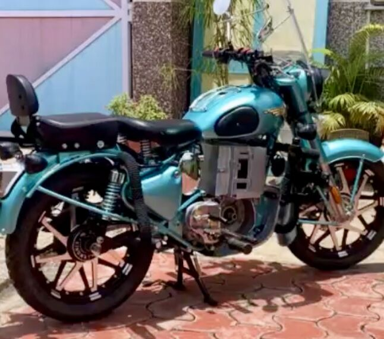
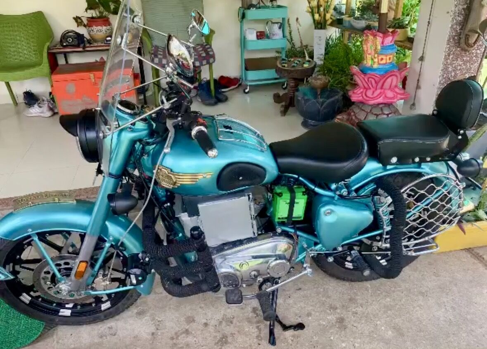
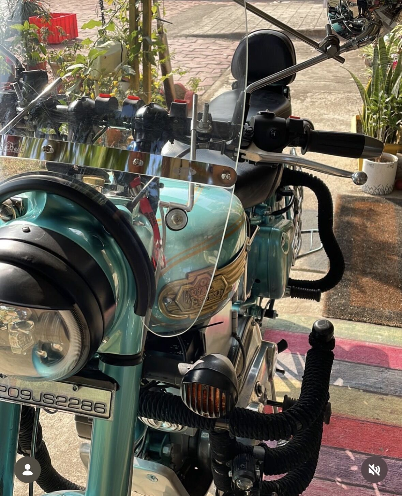
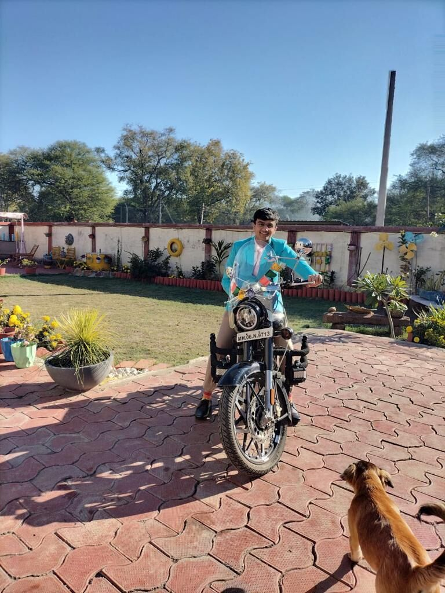
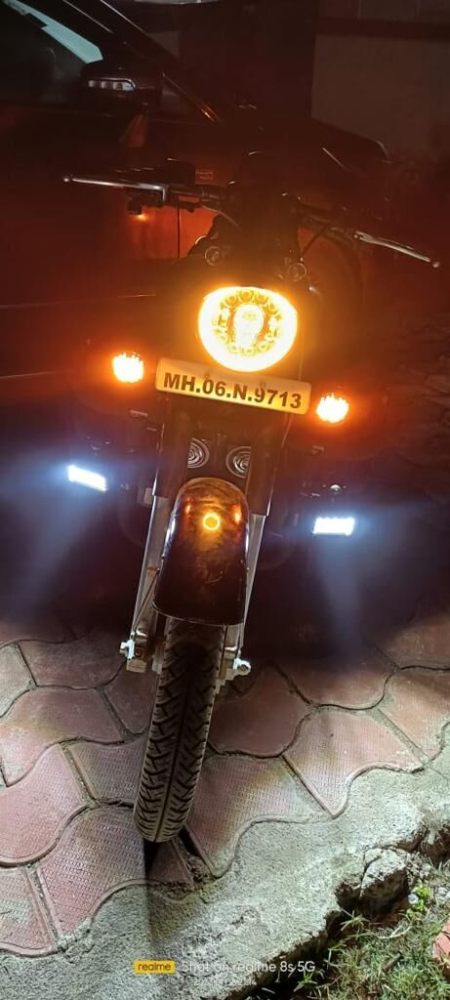
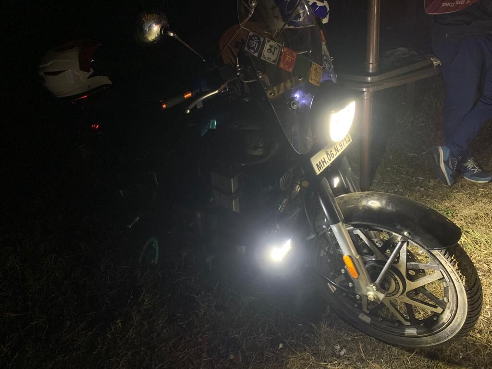